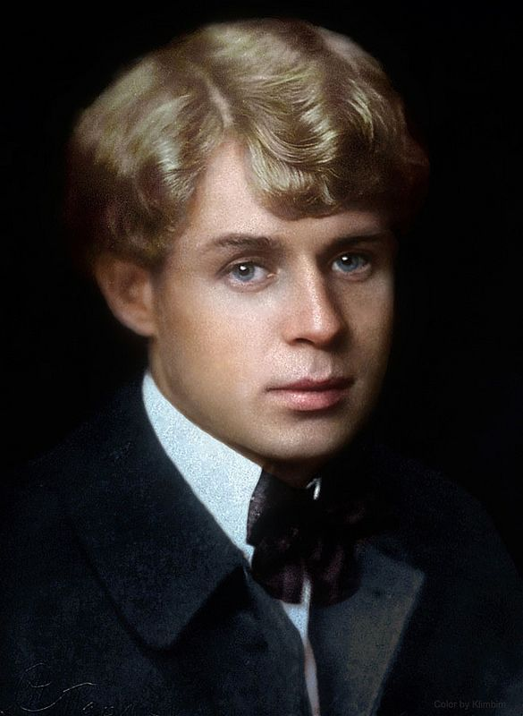

Отговорила роща золотая
Березовым, веселым языком,
И журавли, печально пролетая,
Уж не жалеют больше ни о ком.
Кого жалеть? Ведь каждый в мире странник
Пройдет, зайдет и вновь оставит дом.
О всех ушедших грезит конопляник
С широким месяцем над голубым прудом.
Стою один среди равнины голой,
А журавлей относит ветер в даль,
Я полон дум о юности веселой,
Но ничего в прошедшем мне не жаль.
Не жаль мне лет, растраченных напрасно,
Не жаль души сиреневую цветь.
В саду горит костер рябины красной,
Но никого не может он согреть.
Не обгорят рябиновые кисти,
От желтизны не пропадет трава.
Как дерево роняет тихо листья,
Так я роняю грустные слова.
И если время, ветром разметая,
Сгребет их все в один ненужный ком.
Скажите так... что роща золотая
Отговорила милым языком.